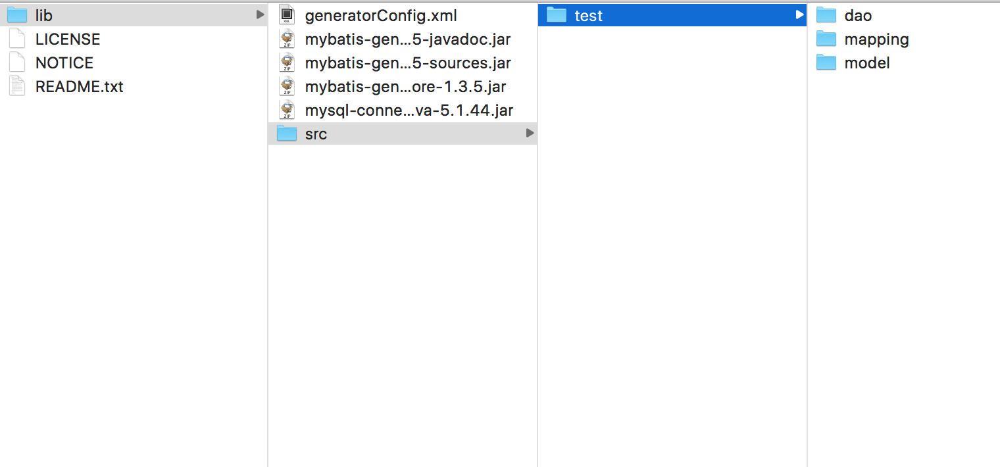

前言
实习也一个月多了，也学到了很多的东西，记得刚开始接触开发时，其中感觉最恶心的是mybatis的相关文件的编写，主要是Mapper文件，之前自己的个人项目中，数据库相关的字段命名都是很不规范的，而且字段也少。所以一开始接触企业项目时真的是头痛，mapper基础文件又长。第二天感觉这样效率很低，就自己写了一个java程序，通过在建模工具中导出的sql建表语句进行生成需要的部分。最近不知怎么突然感觉肯定有相应的工具类，果然。。。（记得有个老哥一开始还自己写了getter和setter的自动生成的脚本，哈哈哈），既然有这些比较稳定的工具，肯定比自己几小时写的程序好用的。
使用
相关文件下载
2.数据库驱动jar包，我这里使用的是mysql，可以去这里 下载，我使用的是5.1.44版本
具体操作过程
1.解压下载的Mybatis-Generator的压缩包，进入lib文件夹下

放入之前已经下载好的mysql驱动包，以及创建好generatorConfig.xml配置文件，再创建相关的生成的类的文件夹
2.generatorConfig.xml文件，还是比较好修改的
<?xml version="1.0" encoding="UTF-8"?>
<!DOCTYPE generatorConfiguration
PUBLIC "-//mybatis.org//DTD MyBatis Generator Configuration 1.0//EN"
"http://mybatis.org/dtd/mybatis-generator-config_1_0.dtd">
<generatorConfiguration>
<!--数据库驱动-->
<classPathEntry location="mysql-connector-java-5.1.44.jar"/>
<context id="DB2Tables" targetRuntime="MyBatis3">
<commentGenerator>
<property name="suppressDate" value="true"/>
<property name="suppressAllComments" value="true"/>
</commentGenerator>
<!--数据库链接地址账号密码-->
<jdbcConnection driverClass="com.mysql.jdbc.Driver" connectionURL="jdbc:mysql://127.0.0.1:3306/dmc-test?characterEncoding=utf8" userId="root" password="******">
</jdbcConnection>
<javaTypeResolver>
<property name="forceBigDecimals" value="false"/>
</javaTypeResolver>
<!--生成Model类存放位置-->
<javaModelGenerator targetPackage="test.model" targetProject="src">
<property name="enableSubPackages" value="true"/>
<property name="trimStrings" value="true"/>
</javaModelGenerator>
<!--生成映射文件存放位置-->
<sqlMapGenerator targetPackage="test.mapping" targetProject="src">
<property name="enableSubPackages" value="true"/>
</sqlMapGenerator>
<!--生成Dao类存放位置-->
<javaClientGenerator type="XMLMAPPER" targetPackage="test.dao" targetProject="src">
<property name="enableSubPackages" value="true"/>
</javaClientGenerator>
<!--生成对应表及类名-->
<table tableName="testtable" domainObjectName="Testtable" enableCountByExample="false" enableUpdateByExample="false" enableDeleteByExample="false" enableSelectByExample="false" selectByExampleQueryId="false"></table>
</context>
</generatorConfiguration>
3.在lib文件夹下输入以下命令
java -jar mybatis-generator-core-1.3.5.jar -configfile generatorConfig.xml -overwrite
4.完成
结尾
通过工具的使用，可以大大提高工作的效率，而且文件的准确性也没问题，之后也可以使用起来。